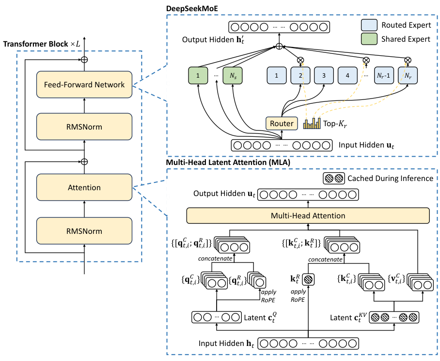

DeepSeek-V3 Technical Report
原报告：DeepSeek-AI 版本：2025-02-18 / arXiv v2 阅读原文 ↗
这是一份精简的排版参考：保留少量原文短引，搭配摘要、数据和原报告图片，展示一份静态技术文档的常见格式。中文说明为摘要改写；代码为排版示例。
1. 模型概览
DeepSeek-V3 是一个 Mixture-of-Experts（MoE） 模型，总参数量为 671B，每个 token 激活 37B 参数。报告描述了模型架构、训练基础设施和训练后对齐流程。[1]
671B total parameters with 37B activated for each token.
原文短引 · 摘要，第 1 页 ↗
核心要点
- 注意力：使用 MLA 减少推理中的 KV cache。
- 专家路由：采用不依赖辅助损失的负载均衡策略。
- 训练目标：引入多 token 预测。
以上要点依据原报告摘要与第 2 节整理，用于展示正文、强调、无序列表和文献标记。
2. 架构与图示
2.1 Multi-Head Latent Attention
MLA 对注意力的 key 和 value 进行低秩联合压缩，推理时缓存压缩表示。下式展示该过程的第一步。[1]
ctKV = WDKVht

2.2 阅读顺序
- 先看左侧 Transformer 模块中的 Attention 与 Feed-Forward Network。
- 再看右上专家模块中的共享专家、路由专家与 router。
- 最后对照右下 MLA 图，识别推理时需要缓存的表示。
3. 训练与表格
训练语料规模为 14.8T tokens。报告按预训练、上下文扩展和训练后对齐三个阶段列出了 H800 GPU 使用量。[1]
| 阶段 | H800 GPU 小时 | 估算费用 / USD |
|---|---|---|
| 预训练 | 2,664,000 | $5,328,000 |
| 上下文扩展 | 119,000 | $238,000 |
| 训练后对齐 | 5,000 | $10,000 |
| 合计 | 2,788,000 | $5,576,000 |
4. 代码与引用
用 37 / 671 展示行内代码；下面的 Python 仅演示参数比例计算，不是报告中的官方实现。
# Illustrative calculation, not model implementation.
def activation_ratio(total, active):
return active / total
model = {"total": 671, "active": 37}
ratio = activation_ratio(model["total"], model["active"])
print(f"Active parameter ratio: {ratio:.2%}")输出约为 5.51%；它是参数比例，不代表计算量、吞吐或延迟的同比变化。